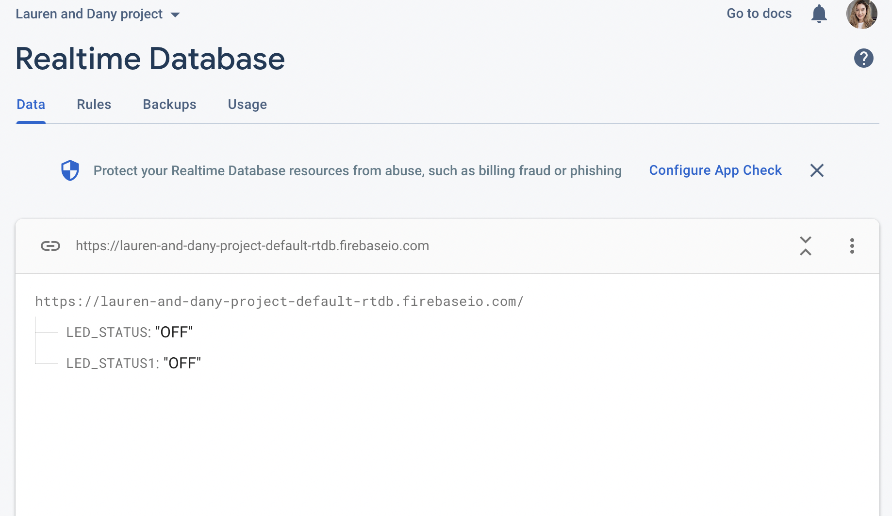

<style>
h3 {
color: DeepPink;
}
h2 {
color: DeepBlue;
text-align: center;
}
img {
display: block;
margin-left: auto;
margin-right: auto;
}
</style>
<div class="container-fluid">
### Week 9: Radio, WiFi, Bluetooth (IoT)
<h1> Friends from afar!</h1>
<p1>
This week I partnered up with Daniella Ineza. We live in the same entryway in Eliot house so we love to meet up to walk to class. The problem? One of us is ALWAYS running late, and keeps the other one waiting by the door for the other.
<br> <br>
The solution? A light up system where if one of the pair touches a sensor, the other one lights up. That way, we can quickly let the other know when we're leaving, even if we live three floors apart!
<br> <br>
<img src="daniella.png" alt="Daniella at work" width="400" class="center">
<img src="circ.png" alt="First circuit" width="400" class="center">
<br> <br>
First, we built a circuit with the ESP32s, with a capacitative sensor input and an LED output. Our first step was just making a simple setup where, when the capacitative sensor was touched, the LED would light up. <br>
We used this code for this first step to make sure the circuit worked:
</p1>
<pre>
<code>
const int CAPACITIVE_TOUCH_INPUT_PIN = T6; // GPIO pin 14
const int LED_OUTPUT_PIN = 21;
const int TOUCH_THRESHOLD = 30; // turn on light if touchRead value < this threshold
const boolean PRETTY_PRINT = false;
void setup() {
Serial.begin(9600);
pinMode(LED_OUTPUT_PIN, OUTPUT);
}
void loop() {
unsigned long startReadTimestamp = micros();
int touchVal = touchRead(CAPACITIVE_TOUCH_INPUT_PIN);
unsigned long elapsedTime = micros() - startReadTimestamp;
boolean ledOn = false;
// Turn on LED if touchRead value drops below threshold
if(touchVal < TOUCH_THRESHOLD){
ledOn = true;
}
digitalWrite(LED_OUTPUT_PIN, ledOn);
if(PRETTY_PRINT){
Serial.println((String)touchVal + ", " + elapsedTime + " microseconds, LED " + ledOn);
}else{
Serial.println((String)touchVal + ", " + ledOn);
}
delay(50);
}
</code>
</pre>
<p2>
Next, we wanted to link the circuit up to Firebase, an online platform which served as a remote server which can communicate with the ESP32.
<br> <br>
We used this tutorial from RandomNerd as listed on the PHYSCI-70 website, <a href="https://randomnerdtutorials.com/esp32-firebase-realtime-database/">click here to check it out!</a> <br>
First, we used the Firebase platform to allow us to detect whether or not the LED was switched on or not. We would use the sensor to turn on the LED, as with the previous circuit, however, this time the ON or OF signal would change on the above "Realtime Database" page of Daniella and I's shared project.

<br> <br>
From there, we wanted to make it possible to change the LED status from the Firebase interface. In OH Kassia helped us adapt the code on Firebase so that we could turn the LED on and off. Here is our code:<br> <br>
</p2>
<pre>
<code>
#include <WiFi.h> // esp32 library
#include <FirebaseESP32.h> // firebase library
#define FIREBASE_HOST "lauren-and-dany-project-default-rtdb.firebaseio.com/" // the project name address from firebase id
#define FIREBASE_AUTH "g5RSxhVN9dLnPSwQDE9OBo9e2zuZehowuQ8znf9H" // the secret key generated from firebase
#define WIFI_SSID "MAKERSPACE" // input your home or public wifi name
#define WIFI_PASSWORD "12345678" // password of wifi ssid
String fireString = ""; // led status received from firebase
int ledpin = 5;
const int CAPACITIVE_TOUCH_INPUT_PIN = T6; // GPIO pin 14
const int TOUCH_THRESHOLD = 30; // turn on light if touchRead value < this threshold
const boolean PRETTY_PRINT = false;
//Define FirebaseESP32 data object
FirebaseData firebaseData;
void setup() {
Serial.begin(115200);
delay(1000);
pinMode(ledpin, OUTPUT);
WiFi.begin(WIFI_SSID, WIFI_PASSWORD); // try to connect with wifi
Serial.print("Connecting to ");
Serial.print(WIFI_SSID);
while (WiFi.status() != WL_CONNECTED) {
Serial.print(".");
delay(500);
}
Serial.println();
Serial.print("Connected to ");
Serial.println(WIFI_SSID);
Serial.print("IP Address is : ");
Serial.println(WiFi.localIP()); // print local IP address
Firebase.begin(FIREBASE_HOST, FIREBASE_AUTH); // connect to firebase
Firebase.reconnectWiFi(true);
Firebase.set(firebaseData, "/LED_STATUS1", "OFF"); // set initial string of "OFF"
}
void loop() {
unsigned long startReadTimestamp = micros();
int touchVal = touchRead(CAPACITIVE_TOUCH_INPUT_PIN);
unsigned long elapsedTime = micros() - startReadTimestamp;
boolean ledOn = false;
Firebase.get(firebaseData, "/LED_STATUS1"); // get led status input from firebase
fireString = firebaseData.stringData(); // change to e.g. intData() or boolData()
Serial.println(fireString);
if (touchVal < TOUCH_THRESHOLD){
Firebase.set(firebaseData, "/LED_STATUS1", "ON");
Serial.println("Led Turned ON");
digitalWrite(ledpin, HIGH); // make output led ON
}
else if (touchVal > TOUCH_THRESHOLD){
Firebase.set(firebaseData, "/LED_STATUS1", "OFF");
Serial.println("Led Turned OFF");
digitalWrite(ledpin, LOW); // make output led OFF
}
else {
Serial.println("Please send ON/OFF");
}
delay(1000); // not strictly necessary
}
</code>
</pre>
<p3>
Amazingly, our ESP32 was responding—we could now control our circuits remotely! I created a second input for the second ESP32 on Firebase. At this point we had two ESP32 circuits, both connected to Firebase that could be switched on remotely. However, for maximum ease of use the circuits would both turn on when *either one of them* is touched.
<br>
To do so, we would need to add if statements to check firebase is off or on for the other device, which would then turn the LED on. I'm not quite sure what that code would look like myself, so hopefully we can pop into office hours and take the project to the next level!
<img src="circ.png" alt="First circuit" width="400" class="center">
</p3>